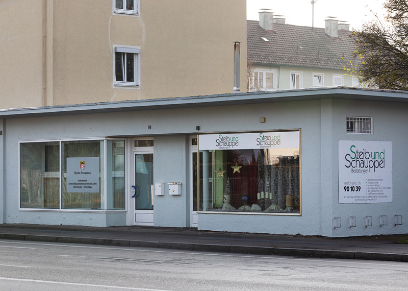

Steib & Schauppel Bestattungen. Memmingen.
Von den Wurzeln her das älteste Bestattungsunternehmen Memmingens · gegründet 1957, heute Teil der Allgäu Bestatter.

Zwei Namen. Eine lange Memminger Geschichte.
1957 als Leichentransportunternehmen gegründet, ist die Firma Steib von ihren Wurzeln her das älteste Bestattungsunternehmen in Memmingen. Anfangs in der Stadtweiherstraße ansässig, zog der Betrieb ab 1970 in die Kuttelgasse und anschließend in die Weberstraße. Seit 2002 ist der Sitz in der Bismarckstraße 17 · dort finden Sie uns bis heute.
Die Firma Schauppel war ab 1969 in der Hadwigstraße zu finden. Im Laufe der Zeit verschmolzen Steib Bestattungen und der Bestattungsdienst Schauppel zur Firma Steib & Schauppel.
2003 übernahm Bestattungen Bayer die Firma und behielt den traditionsreichen Namen bewusst bei. Seit 2019 lautet der vollständige Firmenname Memminger Bestattungsdienst Steib & Schauppel KG.
Bismarckstraße 17 · 87700 Memmingen
Telefon 08331 901039
Rufen Sie an. Zu jeder Stunde.
In der Bismarckstraße und über unsere zentrale Rufnummer · Tag und Nacht.
08331 901039